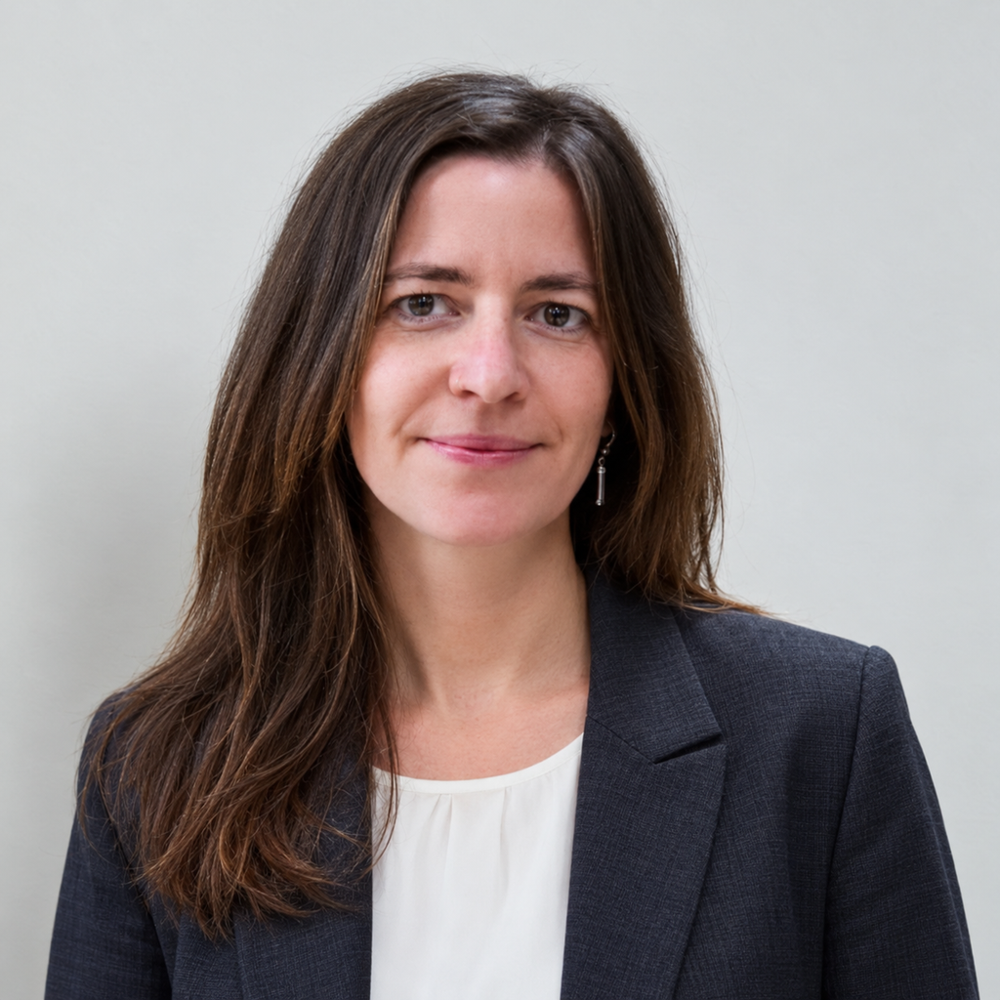

Čevora.xyz
Alžběta Medlová

Alžběta is an experienced content creator focused on video, visual storytelling, and brand communication. She combines hands-on experience in television production, marketing, and community management with a feel for story, format, and audience.
What she does
- Creates video content for companies: corporate films, reports, campaigns, and social-media content.
- Edits and post-produces advertising and television material, including compositing and final picture finishing.
- Designs content formats and communication for events, festivals, community spaces, and cultural projects.
- Works with PR, marketing, and community building — from preparing content to distributing it and communicating with the audience.
Selected experience
- Freelance Content Creator & Video Editor — making videos for companies and editing reports for Czech Television; she also works on campaign and field communication.
- Video Editor, IS Produkce — post-production and editing of commercials for Kaufland, including editing and compositing.
- Program Creator, PR & Marketing, Club of Culture — programming and communication for a multimedia festival.
- Community Manager, HUB 123 — developing a community space, education, events, and a cultural programme.
- Filmmaker and reporter, Czech Television — directing, camera, and editing of reports; a long-term freelance collaboration.
Approach
Alžběta can turn a subject, product, or idea into a clear visual story. She is strong in fast-turnaround production, editorial post-production, and content that works for the web and social media as well as for broader communication campaigns.